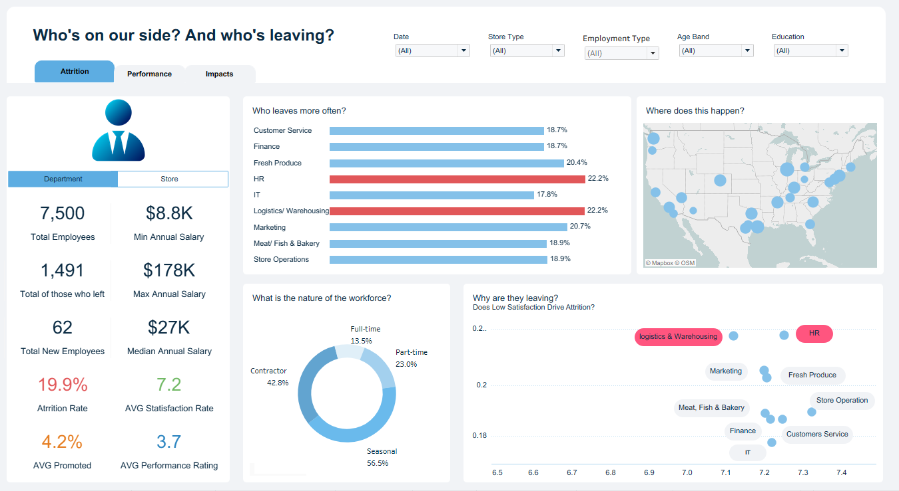
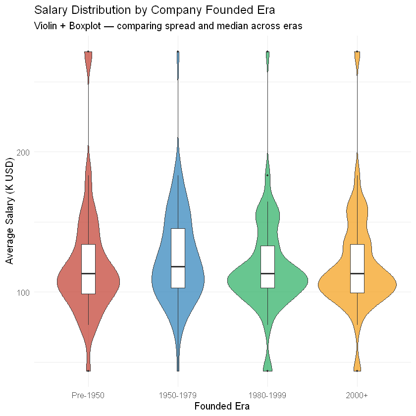
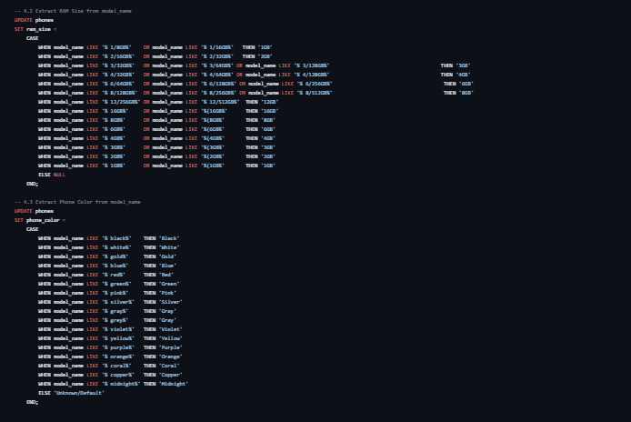

Data Analyst Portfolio
Ali Rabie
Junior Data Analyst with a statistical background and hands-on experience building end-to-end analytics projects across e-commerce, telecom, HR, marketing, and startup ecosystems.
Built analytics solutions that uncovered 207% YoY growth, identified $1.67M in churn-driven revenue risk, and analyzed $419.7B in startup funding using Python, SQL Server, Power BI, Tableau, Excel, and R.
Core stack
Power BI · Tableau · Excel · SQL · Python · R
About
Business-minded analytics with a statistical foundation
Junior Data Analyst with a background in Educational Psychology and Statistics (3.6 GPA) and professional training through NTI and the ITIDA Data Analysis Track. I build end-to-end analytics solutions that transform raw data into business decisions. My projects span e-commerce, telecom, HR, marketing, finance, and startup ecosystems, covering data cleaning, SQL modeling, statistical analysis, customer segmentation, dashboard development, and business storytelling. Across my portfolio, I have analyzed datasets containing over 100K transactions, identified 207% year-over-year growth opportunities, quantified $1.67M in churn-related revenue risk, and explored $419.7B in startup funding activity.
Skills
Tools and methods I use
Programming & Databases
BI & Visualization
Analytics & Statistics
Professional Skills
Featured Projects
Analytics projects focused on solving real business problems through data, visualization, and storytelling.
Python · SQL · Power BI
Crunchbase Startup Ecosystem Analytics
Built an end-to-end analytics pipeline for Crunchbase 2013 startup data, combining Python cleaning, SQL Server modeling, and Power BI dashboarding to reveal funding trends, exit outcomes, and geographic opportunity.

1.45M+ records52K funding rounds$419.7B total funding
View repository ↗
Python · SQL · Power BI
Olist E-commerce Analytics
Built an end-to-end analytics pipeline on 100K+ Brazilian marketplace orders, combining Python cleaning, SQL modeling, and Power BI dashboards to reveal 207% YoY growth and revenue risk from churn.

100K+ orders207% YoYR$1M+ churn risk
View repository ↗
Power BI · Marketing Analytics
Marketing Campaign Performance Dashboard
Designed a Power BI dashboard to connect campaign spend with revenue outcomes, highlight negative ROI initiatives, and prioritize the most profitable marketing channels.

ROI optimizationChannel analysisConversion tracking
View repository ↗
Tableau · Workforce Intelligence
HR Performance Analytics Dashboard
Developed a Tableau dashboard to identify employee attrition patterns, evaluate performance drivers, uncover compensation gaps, and connect workforce metrics with business outcomes across 150 retail stores.

497K+ Records
Attrition Insights
Performance Drivers
Business Impact
View repository ↗
Excel · Analytics Dashboard
Telecom Customer Churn & Call Center Analysis
Analyzed customer churn patterns and call center performance to identify at-risk customer segments, contract-related churn patterns, and service issues affecting retention decisions.

7,043 customers42.7% churn in month-to-month$1.67M risk
View repository ↗
Python · Quantitative Finance
Stock Performance & Risk Analysis
Quantitative analysis of major tech stocks (AAPL, MSFT, TSLA) vs. Gold and S&P 500 using OLS regression, Bollinger Bands, and correlation analysis to profile risk-return tradeoffs.

1,292 trading daysTSLA +1,078%Beta & Volatility
View repository ↗
R · Data Cleaning · EDA
Data Science Jobs — Cleaning & Exploratory Analysis
Cleaned and analyzed a messy Glassdoor dataset of DS job postings — handling sentinel values, parsing salary text, extracting geographic data, and deriving job levels. Explored salary trends across sectors, company size, and founding era through 9 visualizations.

672 job postings
CA leads · 165 postings
84% mid-level roles
View repository ↗
SQL Server · Data Cleaning
Phone Market Data Cleaning & Transformation
Cleaned and transformed a raw mobile phone catalog using SQL Server by removing duplicates, handling missing values, standardizing dates, and extracting structured features from unstructured product descriptions.

350+ Duplicates Removed
Feature Engineering
SQL Data Cleaning
View repository ↗
Experience & Training
Applied experience in data analytics, business intelligence, and statistical problem-solving.
Mar 2026 – May 2026
Data Analytics Intern — National Telecommunication Institute (NTI)
Completed intensive training in SQL, Python, R, Excel, Tableau, and Power BI. Built end-to-end analytics projects covering data preparation, statistical analysis, visualization, and business reporting across e-commerce, healthcare, and finance datasets.
2024 – 2026
Courses & Certifications
ITIDA Data Analysis Track, Data Analysis with Python (freeCodeCamp), Data Literacy Professional Certificate (DataCamp), Building Business Reports Using Power BI (365 Data Science), and Thinking Like an Analyst (Maven Analytics).
Certifications
Verified credentials

ITIDA — Information Technology Industry Development Agency
Data Analysis Track
Feb 2026 · 3 Months
freeCodeCamp
Data Analysis with Python
Mar 2025 · 300 hours
DataCamp
Data Literacy Professional Certificate
Dec 2024 · 15 hours
365 Data Science
Building Business Reports Using Power BI
Nov 2024
Maven Analytics
Thinking Like an Analyst
Oct 2024Education
Academic background
Bachelor of Educational Psychology & Statistics
Al-Azhar University, Cairo
Sep 2019 – Aug 2023
3.6 / 4.0
GPA
Statistics
Probability · Research Methods · Behavioral Data Analysis
Languages
Arabic (Native) · English (Good)
Contact
Let’s connect
Whether you're hiring, collaborating, or simply interested in analytics, I'd be glad to connect and discuss data-driven solutions.